操作說明
介紹畫面的看法與一週的進行方式。
影片說明
以約1分鐘的影片介紹從主畫面到比賽、補強、經營的流程（日文版畫面）。
開始之前
- 手機（Android）：預設平時直握，只有3D比賽時轉為橫握。在「設定」的「畫面方向」中，可分別為比賽以外的畫面與3D比賽選擇直握或橫握。操作為點擊、長按、拖曳。
- PC（Windows）：以橫長視窗遊玩，用滑鼠點擊操作。把視窗拉成直長，就會變成和手機相同的直向畫面。
- 畫面左上的「＜」回到上一個畫面。Android 的返回鍵或 PC 的 Esc 鍵也可以返回。
- 存檔最多3個。遊戲會自動存檔。
- 語言：在「設定」的「語言」中可選擇日文、英文、繁體中文。
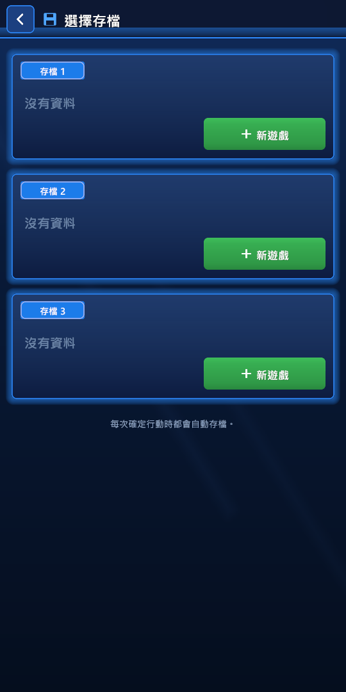
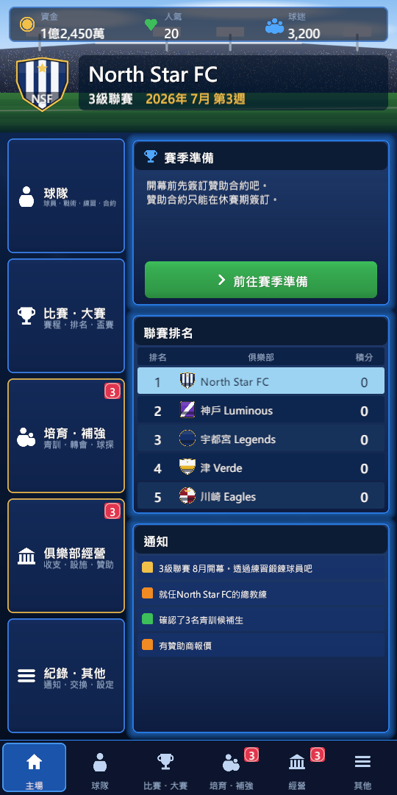
該做的事總整理
整理了最初要做一次的事，以及每年・每月・每週要做的事。不知道該做什麼時就來這裡看看。
最初要做的事
- 建立俱樂部：決定俱樂部名稱、簡稱與隊徽。
- 進行賽季準備（7月）：遊戲從7月開始。簽訂贊助合約，並決定是否進行集訓。
- 決定戰術：「球隊」→「戰術」，先用「自動」決定先發並按「保存」。順便設定自動換人條件會更輕鬆。
- 決定練習：「球隊」→「練習」，選擇全隊練習項目。
- 確認職員：「培育・補強」→「教練」「球探」，聘用教練，並指示球探要搜尋的位置。
- 查看青訓：「培育・補強」→「青訓」，讓今年的候補生入隊（選「回憶後入隊」可以進一步培育）。
- 確認設定：選擇比賽顯示（3D／2D）、比賽速度、手機畫面方向（直握／橫握）與語言。
每年要做的事
- 7月：賽季準備：依序進行排名發表・年度頒獎 → 續約 → 自由轉會 → 贊助 → 集訓。
- 7月：青訓候補生：每年都會來新的候補生。決定直接入隊或回憶後入隊。
- 7月第1週〜9月第2週：夏季轉會期：只有這段期間可以簽入・放出球員。補強不足的位置。
- 7〜8月：亞洲大賽：上季在1級聯賽前3名，或在國內盃奪冠就能參加。
- 8月：聯賽開幕：聯賽持續到隔年6月。國內盃也全年進行。
- 12月：世界俱樂部盃：在亞洲大賽奪冠就能參加。期間聯賽暫停。
- 2月第1週〜3月第1週：冬季轉會期：賽季中補強的機會。
- 6月：賽季結束：決定升降級。可在「年度回顧」回顧這一年。
每月要做的事
- 查看月度報告：換月時會出現該月比賽結果與收支的總結。
- 確認資金：「俱樂部經營」→「收支」「固定費・預估」，確認沒有虧損。
- 強化設施：資金有餘裕就「強化設施」。工程需要4週（球場8週）。
- 查看球探報告：確認發掘的球員，為轉會期做準備。
- 確認合約：「球隊」→「續約」，及早為合約快到期的主力續約。
不需要看比賽的週，可用主畫面的「到下個月第1週」一次推進到下個月（期間的比賽會自動進行，不顯示精華）。
每週要做的事
- 練習：選擇想提升能力的練習項目。疲勞累積的球員個別讓他休息（最多3人）。
- 比賽準備：查看疲勞・狀態・受傷，調整先發。在賽前設定確認對手分析與王牌對決。
- 比賽：從「前往比賽」進行比賽。3D比賽可在中場休息時下達戰術・陣型・換人指示。
- 結果與通知：在本週結果確認提升的能力與發生的事。選單上的紅色數字代表需要確認的事項數。
練習與戰術的數值、設施效果、集訓的選法等，詳見攻略頁面。
主畫面
- 上方橫條：資金・人氣・球迷數。
- 俱樂部名稱下方：目前所屬聯賽與日期（1回合＝1週）。
- 右側大框：本週要做的事。比賽週為「前往比賽」，沒有比賽的週按「前往下一週」推進遊戲。
- 左側選單：從5個分類開啟各畫面（見下表）。紅色數字是需要確認的事項數。
- 聯賽排名・通知：目前的排名與最近發生的事。
- 最下方橫條：從任何畫面都能移動到主畫面與5個分類。
| 選單 | 包含的畫面 |
|---|---|
| 球隊 | 球員一覽・戰術與陣型・練習・續約 |
| 比賽・大賽 | 賽程・聯賽排名・大賽（國內盃・亞洲大賽・世界俱樂部盃）・和朋友的球隊對戰 |
| 培育・補強 | 青訓・轉會・球探・教練 |
| 俱樂部經營 | 收支・月度報告・贊助・強化設施・球場・固定費與預估 |
| 紀錄・其他 | 通知・冠軍與目標・年度回顧・俱樂部歷程・成就・球隊資料交換・設定與存檔 |
一週的進行方式
- 決定練習。「球隊」→「練習」，選擇全隊練習項目與要休息的球員（最多3人）。
- 準備比賽。「球隊」→「戰術」，決定陣型・先發・戰術・自動換人。也可以用「自動」決定。
- 進行比賽。從主畫面的「前往比賽」確認賽前設定，按下「比賽開始」。
- 查看本週結果。顯示比賽結果、練習提升的能力與通知。接著前往下一週。

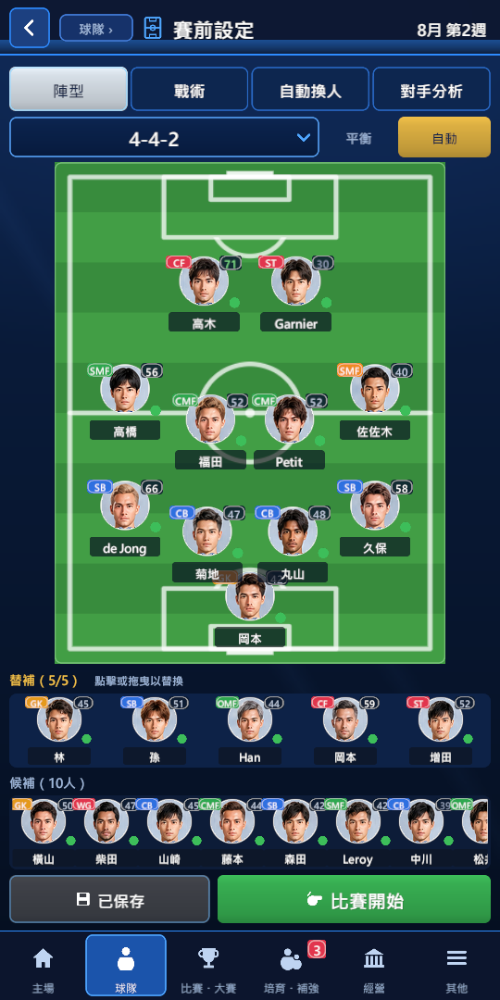
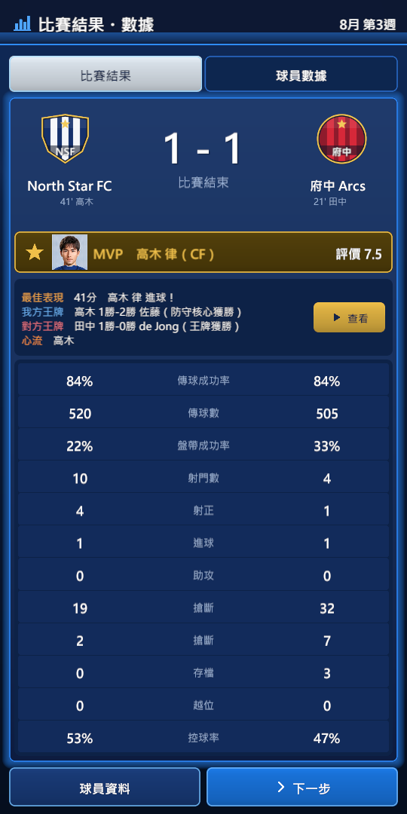
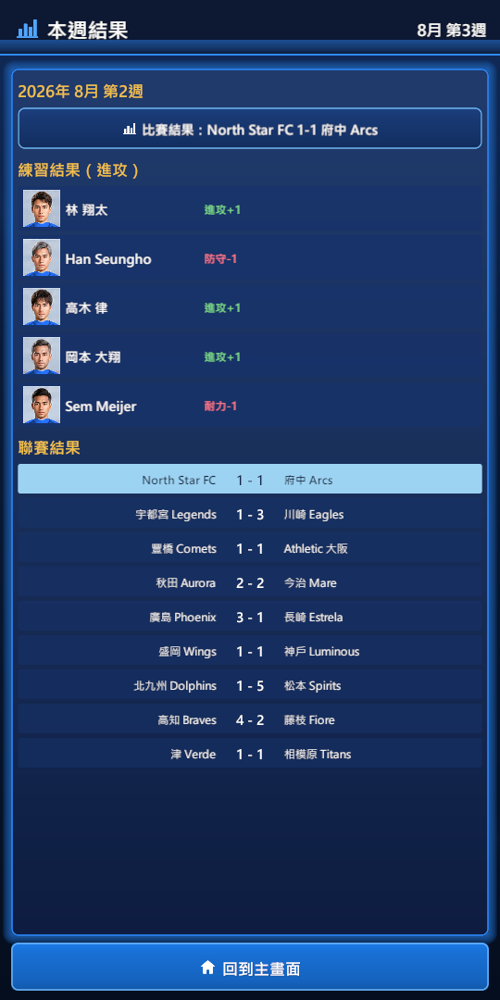
練習累積經驗值就會提升能力。疲勞累積會降低練習效果與比賽表現，請讓疲勞的球員休息。
戰術與先發
- 陣型：從上方欄位選擇（6種）。
- 替換球員：場上・替補・候補的球員可用點擊或拖曳替換。
- 查看球員能力：長按球員可查看能力與技能。
- 戰術：從進攻優先・平衡・防守優先・反擊・控球中選擇。
- 自動換人：設定疲勞時・領先時・落後時等換人條件。
- 對手分析：只有在賽前設定能查看。可確認下一個對手的特徵。
變更的設定按「保存」後才會保留。
比賽

按下「比賽開始」後可選擇比賽方式：
- 比賽開始：以3D觀看比賽。
- 只看結果：不看比賽，以2D精華查看結果。
3D比賽中可以做的事：
- 2倍速・4倍速・跳過：快轉比賽。
- 中場休息：下達戰術・陣型・換人指示。把球員拖曳重疊可比較能力，放開即換人。
在「設定」中可選擇比賽顯示「3D（進行比賽）」或「2D（精華）」。手機還能選擇3D比賽要直握或橫握。隨時都能切換。
變更球員名字與照片

- 從「球隊」→「球員一覽」開啟自家俱樂部的球員。
- 按下球員詳情下方的「名字・照片」。
- 用「選擇照片」從手機或PC的照片中選擇大頭照。「恢復成畫像」可回到原本的臉。
- 輸入姓與名（各10字以內），按「決定」。
照片只保存在此裝置中。透過球隊資料交換傳給朋友的只有名字。
補強與培育
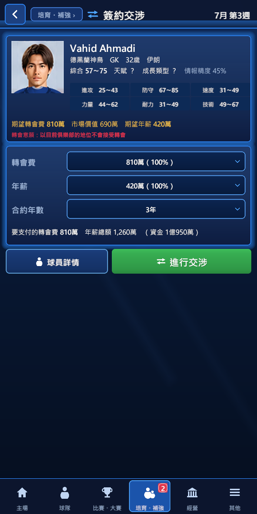
轉會
只有夏季（7月第1週〜9月第2週）與冬季（2月第1週〜3月第1週）可以轉會。在「培育・補強」→「轉會」搜尋球員，用「簽約交涉」決定轉會費・年薪・合約年數後提出報價。
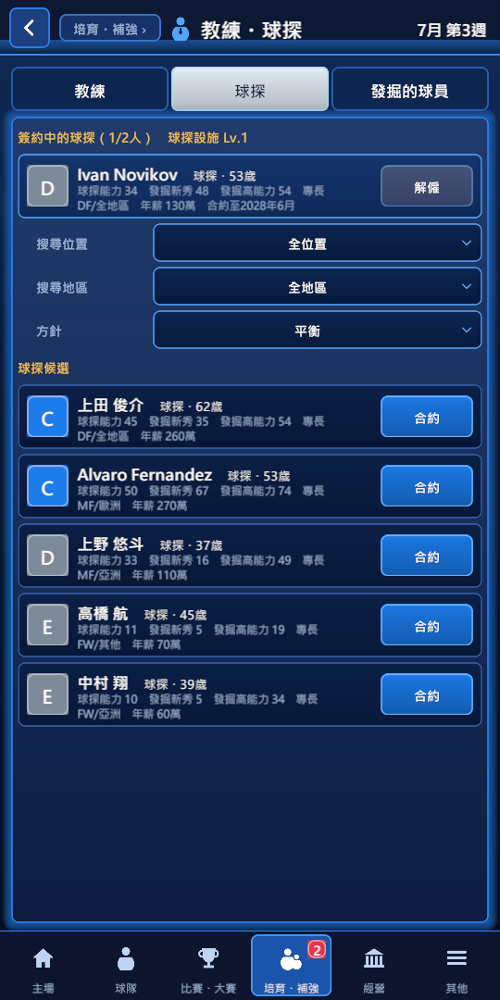
球探
其他俱樂部的球員由球探發掘。可指示要搜尋的位置與地區作為任務。球探調查過的球員，能力與技能會更準確。
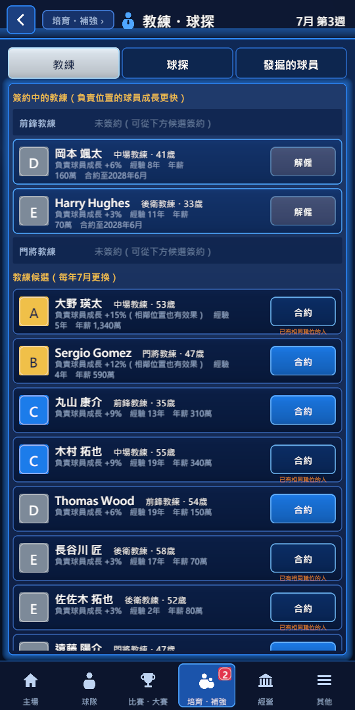
教練
聘用前鋒・中場・後衛・門將教練，負責位置的球員成長更快。合約最後一年可以續約。
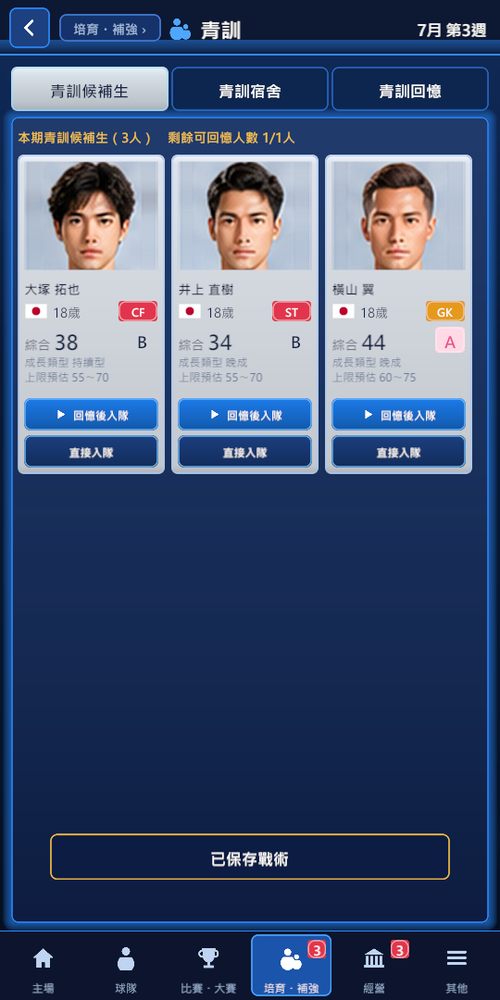
青訓
讓青訓候補生入隊。選擇「回憶後入隊」會進入小遊戲「青訓回憶」，回顧15〜18歲的培育，提升能力與技能。
俱樂部經營
- 收入：贊助費・門票收入（主場比賽）・聯賽與大賽獎金。
- 支出：球員與職員的年薪、設施費用等。
- 贊助：合約只能在賽季準備（7月）期間簽訂。
- 設施：強化練習場與球場等設施，能提升培育與收入。工程需要時間。
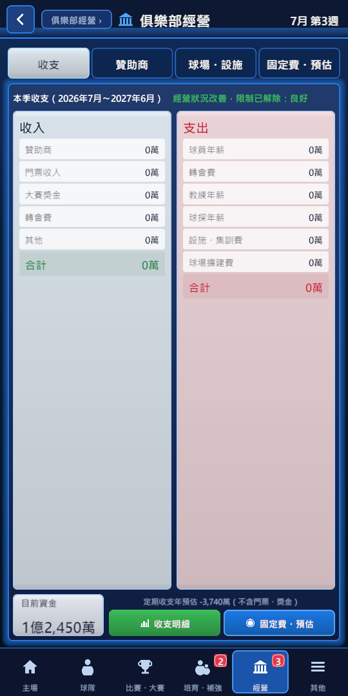
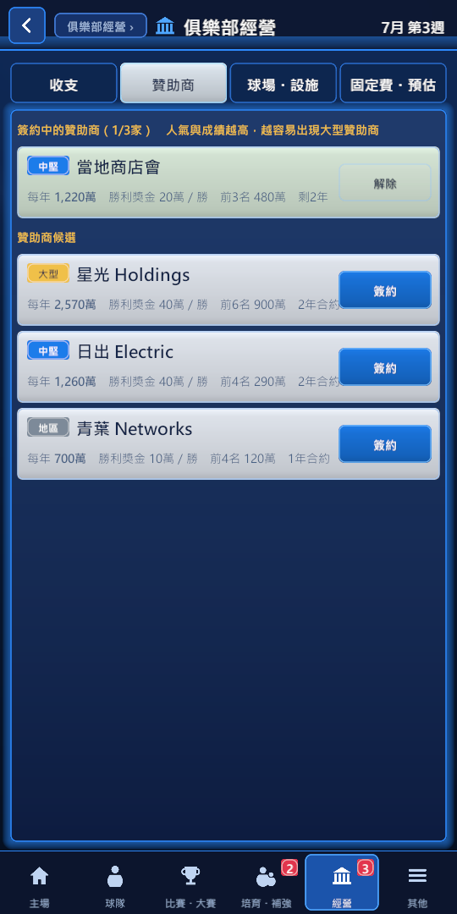
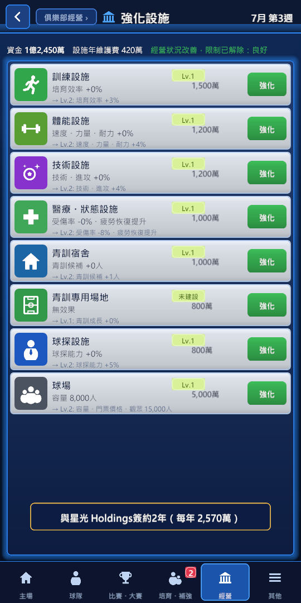
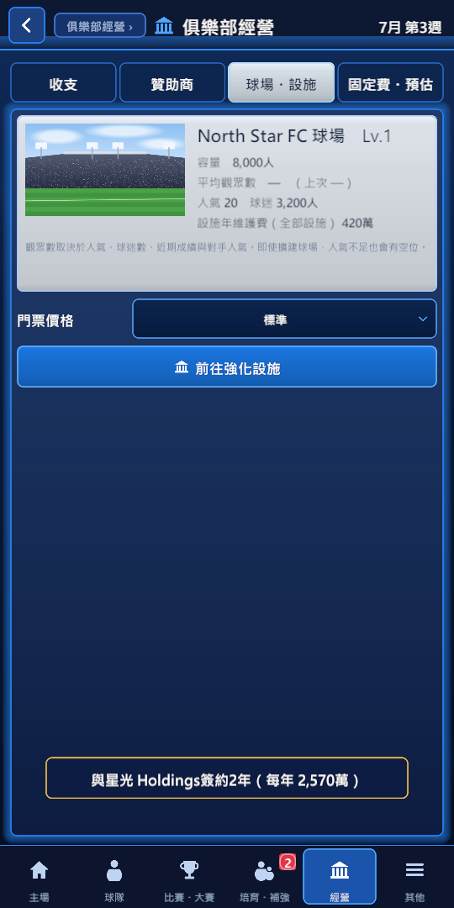
資金用完就無法補強。注意不要連續虧損。
攻略
練習與疲勞、成長類型、戰術、技能、設施、集訓等機制與數值整理在攻略頁面。
賽季準備（7月）
聯賽於8月開幕、隔年6月閉幕。7月是賽季準備，依序進行以下手續：
- 排名發表・年度頒獎：回顧上一季的結果。
- 續約：決定合約到期的球員要續約還是離隊。
- 自由轉會：可以和沒有所屬俱樂部的球員交涉。
- 贊助：與贊助商簽約。
- 集訓：選擇集訓地與主題，提高球員的能力上限（也可以不進行）。
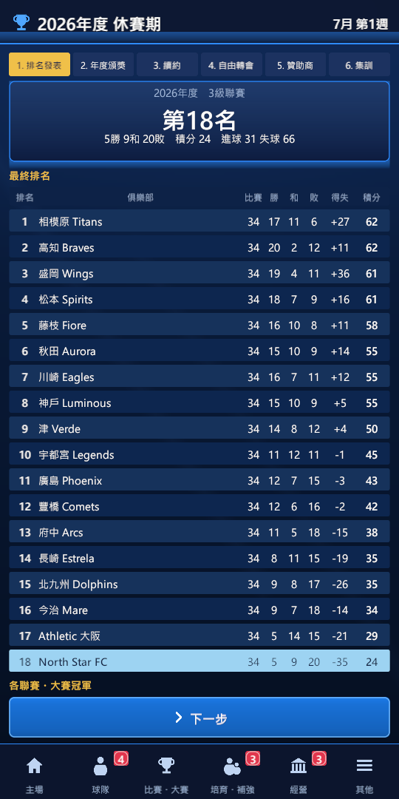
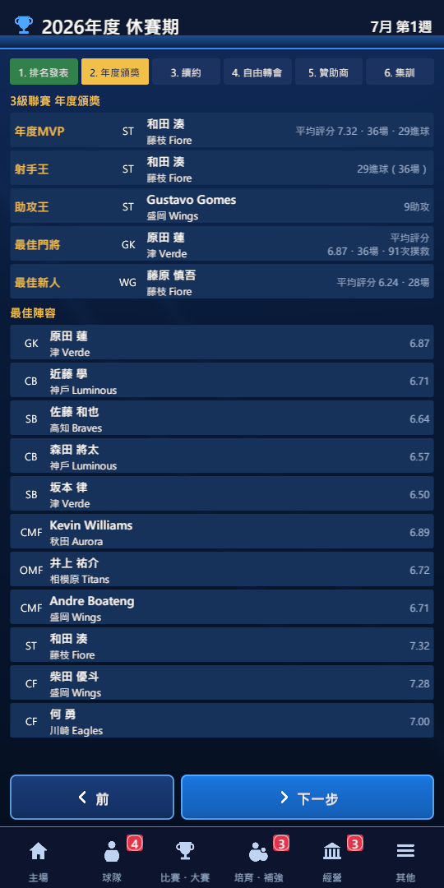
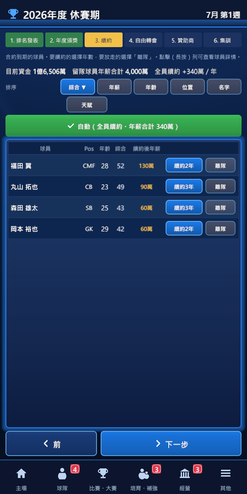
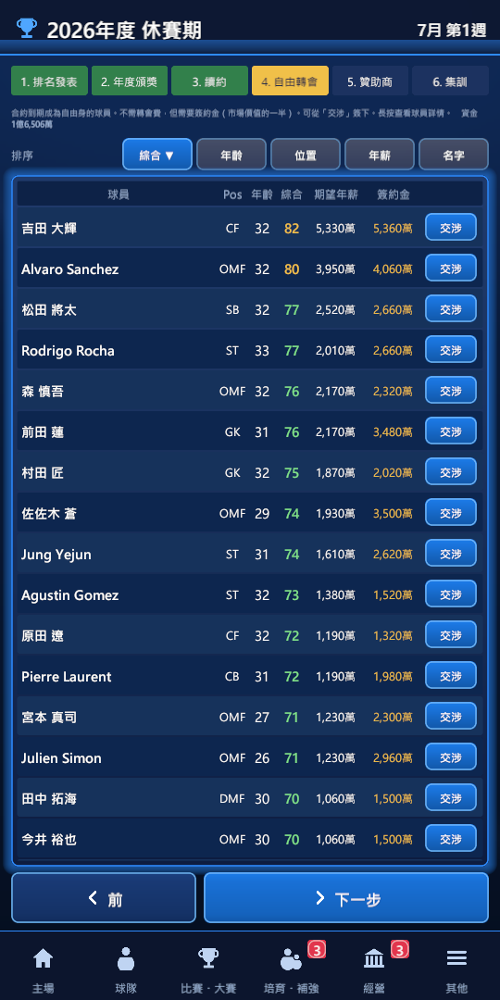
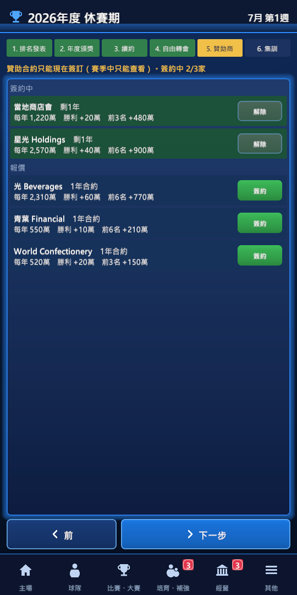
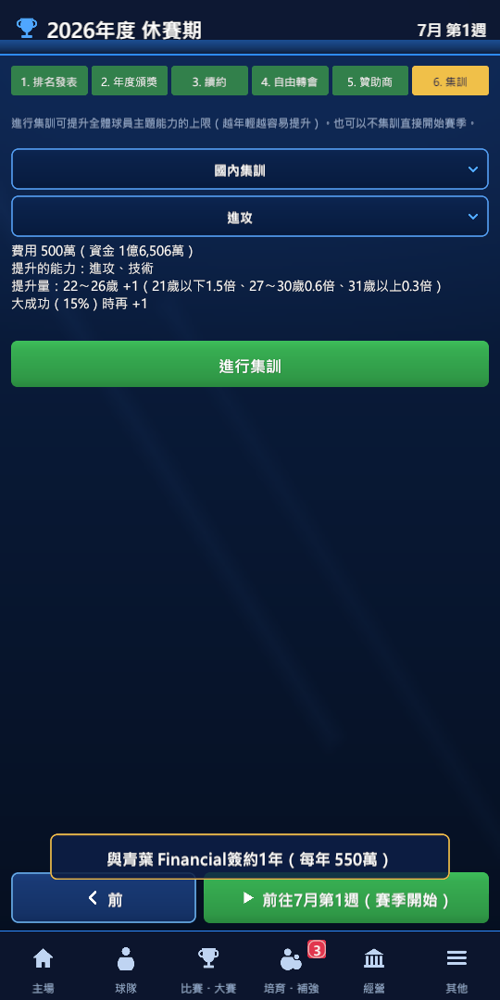